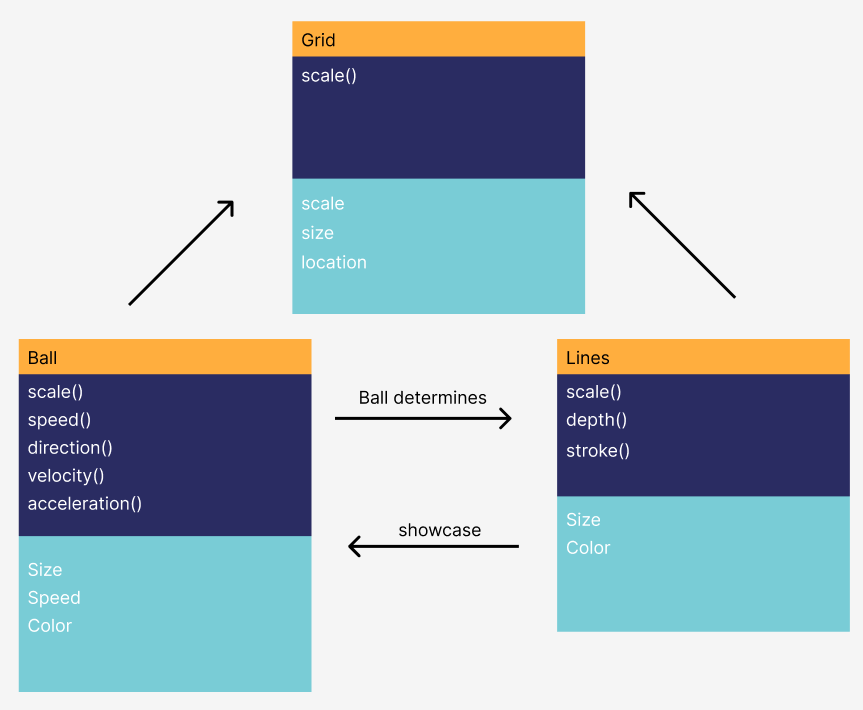

For this project I attempted to make a bouncing ball (similar to our dvd player) that would interact with the grid behind it. You can use two sliders to change the size of the ball and the level of interaction with the grid. The ball's movement and location interact with the grid and determine the look.
UML Diagram:
